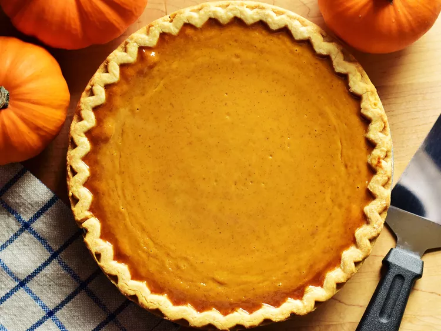

Pumpkin Pie

Description
Thanksgiving wouldn't be complete without a homemade pumpkin pie.
But we're going to let you in on a little secret: Making the seasonal dessert is actually quite simple.
Don't let the season pass you by without trying this easy pumpkin pie recipe.
Ingredients
- 1 (9 inch) unbaked pie crust
- 1 (16 ounce) can pumpkin puree
- 1 (14 ounce) can sweetened condensed milk
- 2 large eggs
- 1 tsp pumpkin pie spice
Directions
- Gather all ingredients.
- Preheat the oven to 425 degrees F (220 degrees C).
- Fit pie crust into a 9-inch pie dish and place it on a baking sheet.
- Combine pumpkin puree, condensed milk, eggs, and pumpkin pie spice in a large bowl; mix until combined.
- Pour mixture into the pie crust.
- Bake in the preheated oven for 15 minutes.
Reduce heat to 350 degrees F (175 degrees C) and continue to bake until filling is set, 35 to 40 minutes.
- Remove from the oven, set on a wire rack, and cool completely before serving.